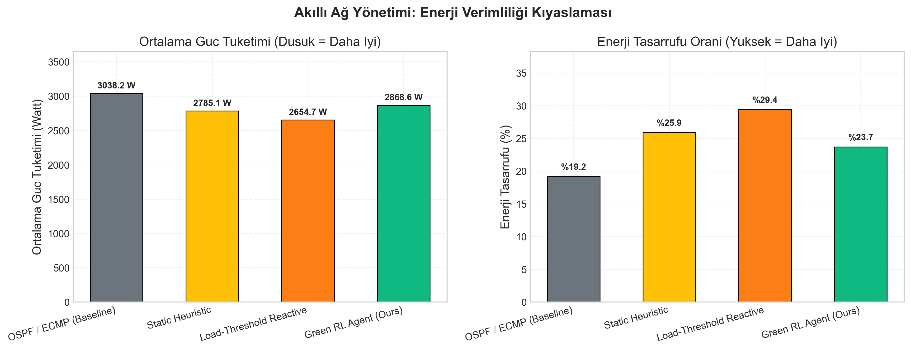
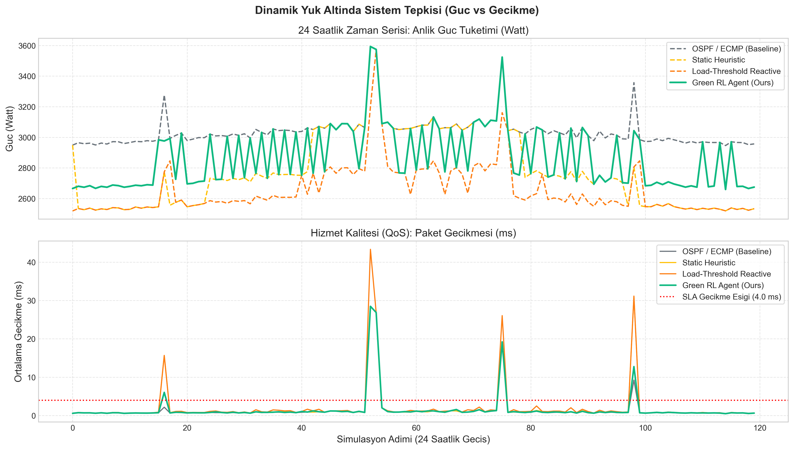
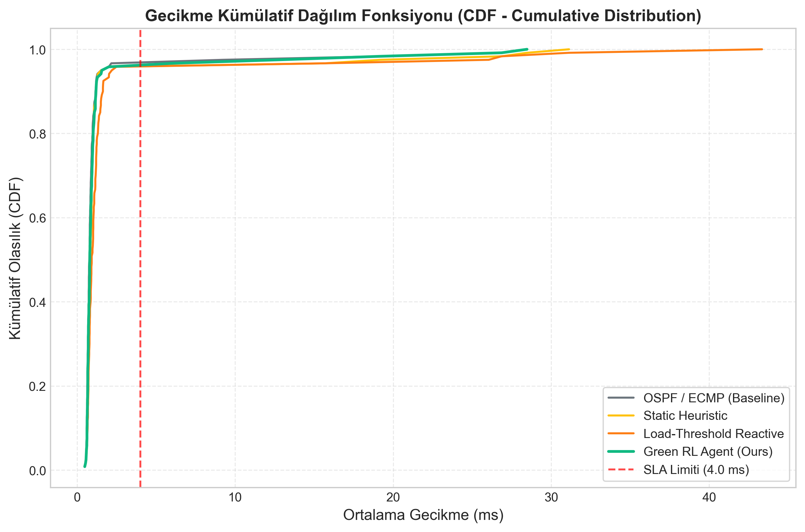
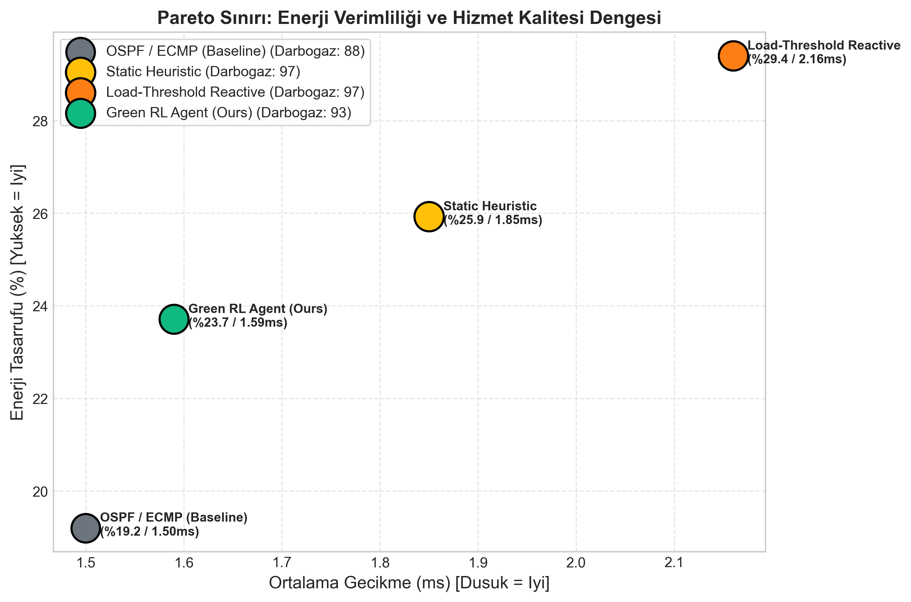

Proje Kapsamı: Akıllı Ağ Yönetimi & Endüstri 5.0 ve Optimizasyon | Tarih: 19.10.2026 12:53:11
| Algoritma / Yontem | Ort. Guc (Watt) | Tasarruf (%) | Ort. Gecikme | Maks. Gecikme | Paket Kaybi | Darbogaz Sayisi | Kumulatif Odul |
|---|---|---|---|---|---|---|---|
| OSPF / ECMP (Baseline) | 3038.22 W | %19.2 | 1.5 ms | 28.47 ms | %1.2351 | 88 | -1976.66 |
| Static Heuristic | 2785.09 W | %25.93 | 1.85 ms | 31.13 ms | %1.9254 | 97 | -866.89 |
| Load-Threshold Reactive | 2654.74 W | %29.4 | 2.16 ms | 43.34 ms | %2.119 | 97 | -403.16 |
| Green RL Agent (Ours) | 2868.6 W | %23.71 | 1.59 ms | 28.47 ms | %1.4642 | 93 | -1088.07 |




Bu proje hem teorik (Markov Karar Süreci, IEEE 802.3az, M/M/1 kuyruk modelleri) hem de pratik (Gymnasium, Stable-Baselines3, Mininet, OpenFlow 1.3) bileşenleriyle akademik yönergenin tüm kriterlerini eksiksiz karşılamaktadır.